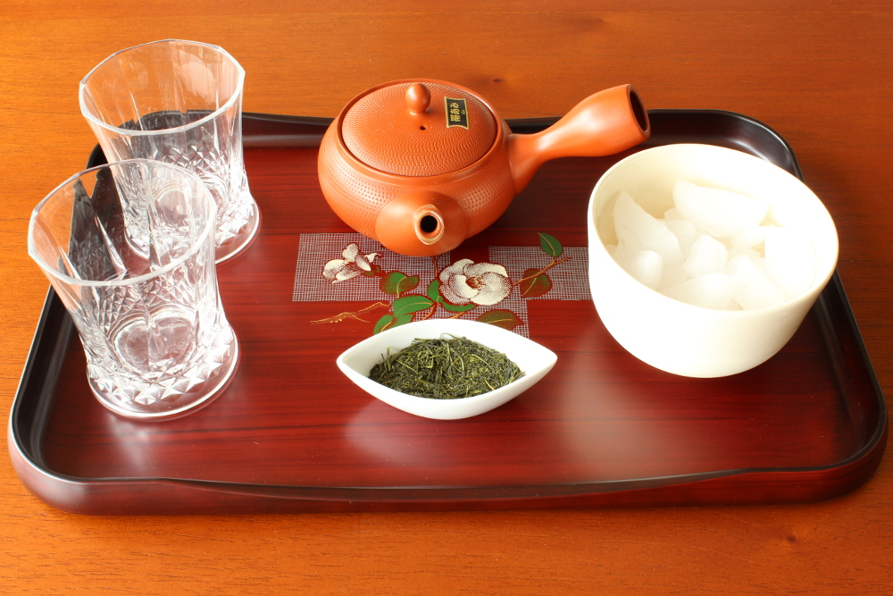

A Beginner's Guide to Brewing Green Tea
 Skip to main content Menu Home Community Culinary Content Network Cook Quick & Easy Breakfast Special Occasions Cooking Ideas Baking 101 Chefs & Cookbooks Seasonal Back-to-School Desserts How To Do It Kitchen & Tools Say Hello to Summer Grilling & Barbecue Ice Cream Time Cookies Best Recipes Cake Chicken Crock-Pot Ground Beef Healthy Pasta Pork Chop Quinoa Salad Salmon Soup Vegetarian Drink Wine Cocktails & Spirits Where to Drink Beer Coffee & Tea Non-Alcoholic Eat/Dine Restaurants Chefs & Personalities Casual Eats Sandwiches Products Food for Thought Healthy Eating Healthy Kitchen Swaps Mind & Body Weight-Loss Entertain Etiquette Weddings & Wedding Cakes Family Time Hosting Tips Setting the Scene The Ultimate Tailgate Celebrity Bites Holidays New Year s Valentine s Day Saint Patrick s Day Passover Easter Cinco de Mayo Graduation Mother s Day Father s Day Fourth of July Halloween Thanksgiving Hanukkah Christmas Travel Trip Tips Culinary Vacations Global Cuisine Festivals & Events Video Home Drink Coffee & Tea Home Drink Coffee & TeaA Beginner's Guide to Brewing Green Tea
January 13, 2014 By Bill Hunt This healthy brew is packed with antioxidants — but can be difficult to brewA step-by-step guide to getting the most out of your green tea.
Green tea is the most popular variety of tea in Japan and China, but is notoriously difficult to brew since it turns bitter so easily. Below, we’ve got all of the secrets to brewing that elusive perfect cup. All teas, aside from herbal varieties, are made from the Camellia sinensis plant. Green tea is different from most as it is very lightly oxidized after picking, allowing it to retain its natural flavor — bringing out those grass and vegetable notes. However, it also retains more bitter tannins which are easily released, making it more difficult to brew.
Check out our A Beginner's Guide to Brewing Green Tea (Slideshow)
To get to that perfect cup, there are just a few things to keep in mind. These rules are for whole-leaf loose teas only — pre-bagged teas and powdered teas such as matcha require different treatment. Brewing instructions are mostly the same regardless of the country of origin. Most good teas come packaged with instructions for the ideal time, temperature, and amount of tea to use — when in doubt, always follow these to the letter.
Use good water. Ideally, you want real spring water, which can be found at any grocery store. If the bottle says it’s from a municipal source, that’s just tap water with a fancy label — try and find one from an actual spring. If you don’t have any spring water, distilled or filtered water are good second choices.
Keep an eye on the temperature. In general, the higher the quality of the green tea, the lower the temperature you’ll want to use for brewing. For instance, a nice Gyokuro would be brewed at 122 - 145°F, but a lower quality Sencha might be brewed around 175°F. A major exception is pan-roasted teas, such as Longjing (Dragon Well), which often require a slightly higher temperature. In general, very few greens are brewed above 185°F, as tannins are released above that temperature.
Using an electric tea kettle with a programmable temperature is recommended because it just makes tea-brewing much easier, but a normal kettle and a thermometer will work. If you need to reduce the temperature, you can pour the water between containers several times — it’s far easier to control the temperature this way than by adding cold water.
Always make sure to rinse your teaware with hot water before brewing tea in it, and keep your cups warm as well. Pouring hot water into a room-temperature container will cool it by as much as twenty degrees, which will affect your tea brewing.
Pay attention to the time. Most teas will only be brewed for 1-3 minutes, again depending on quality. Some high end teas may only require 30 seconds! Once the tea is done brewing, always immediately remove the leaves from the tea. Using a timer is a good idea — the one on your phone will work for this.
The actual container you brew the tea in does not matter as much as these other rules. You can brew great tea in a normal teapot with a strainer basket, a porcelain Gaiwan bowl, or a Yixing clay teapot — though the latter is definitely the preferred method for releasing the best flavors. Similarly, what you drink your tea out of isn’t quite as important — but good ceramic is preferred.
The amount of tea you’ll use will vary, but generally a tablespoon or less for a six ounce container is common. In general, too much tea won’t dramatically hurt the flavor, but too little won’t allow the flavor to blossom. However, most teas can be steeped several times.
Related The 10 Best Teas for Weight Loss Spicing Up Your Drinks for Better Health Dr. Verma’s Verdict: Juice Cleanses — Hype or Healthy? Best Fruit and Vegetable Combinations for Juice Diets 10 Healthy Drinks to Start Your DayCheck out our step-by-step tea brewing process here.
Homemade Pumpkin Spice Syrup for Coffee, Ice Cream and More